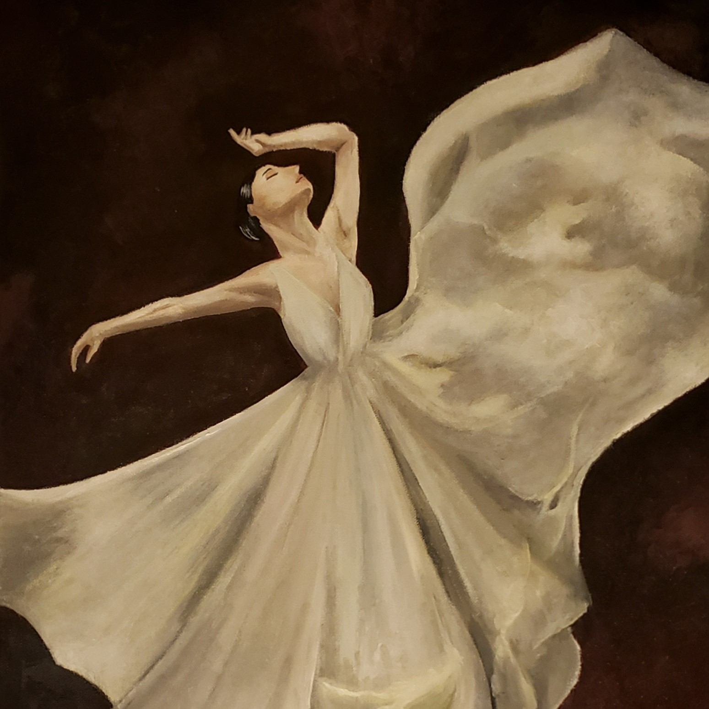

Bullet Journal
I try to set aside at least an hour each week to create daily planning spreads in my bullet journal. It's a hobby I personally find very therapeutic. I often go back to my old spreads to see what my past self has been up to. Through the years I've bullet journaled, I am able to reflect on my past self, which I find integral to my personal growth.

Painting
Oil painting has been one of my favorite hobbies since I was 11 years old. I am often inspired by natural landscapes and movement and try to incorporate these obersations in my paintings.